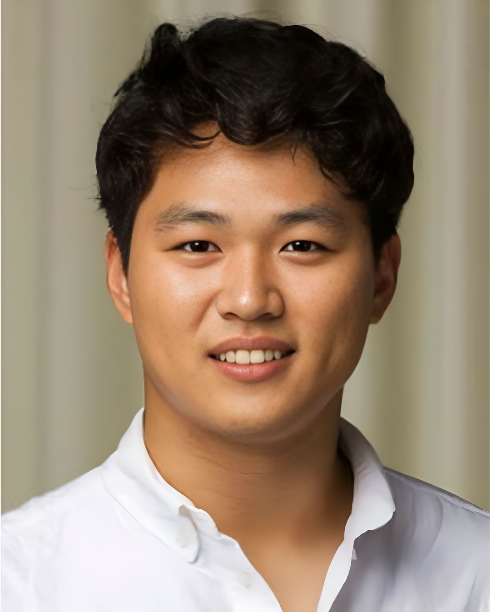
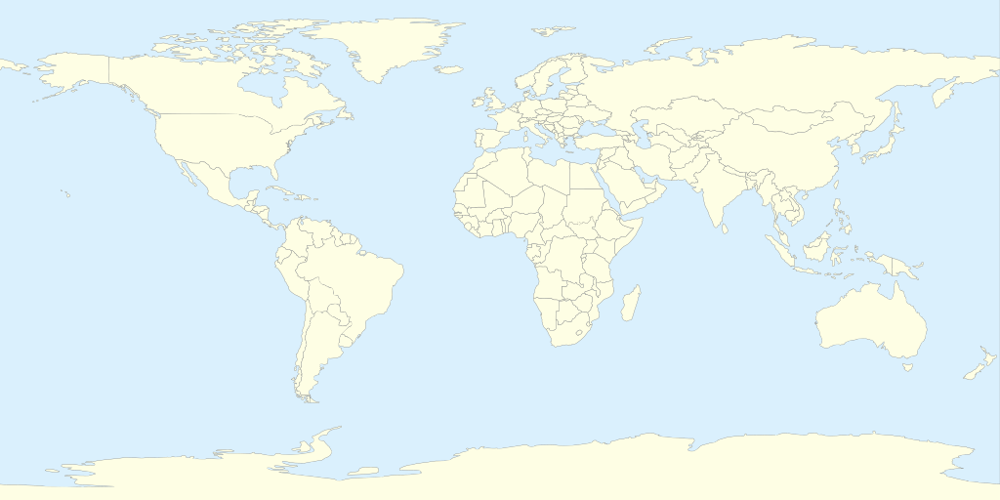

2025–present
🇺🇸
Ph.D., Robotics
Georgia Institute of Technology · Atlanta, USA
George W. Woodruff School of Mechanical Engineering

Biography
Robotics Ph.D. student · Georgia Institute of Technology
I am a Robotics Ph.D. student in the George W. Woodruff School of Mechanical Engineering at Georgia Tech. My research explores how robots can interpret human intent, share control, and communicate their actions through extended reality.
My work spans human–robot collaboration, immersive teleoperation, egocentric perception, and 3D scene understanding. I am particularly interested in how robots can become better companions by understanding a person’s state and intent, so that they can assist proactively rather than only react. I am a member of the Symbiotic and Augmented Intelligence Laboratory.
Education
Georgia Institute of Technology · Atlanta, USA
George W. Woodruff School of Mechanical Engineering
ETH Zürich · Zürich, Switzerland
Excellence Scholarship & Opportunity Programme (ESOP) scholar — a full-cost scholarship with mentorship and access to the ETH Foundation network.
TU Delft · Delft, the Netherlands
Cum laude · Minor in Electronics for Robotics
IDEA League Challenge Programme — selected as one of six TU Delft students in the third year of my BSc for the multidisciplinary technology-and-society programme.

Experience
Symbiotic and Augmented Intelligence Laboratory · Georgia Tech
Human–robot collaboration, shared autonomy, immersive teleoperation, and egocentric perception.
Neuromeka · Seoul, South Korea (military service)
Predictive human–robot collaboration, mobile manipulation, navigation, and dynamic obstacle avoidance.
MAXST · Seoul, South Korea (military service)
Led 3D computer vision, mobile room reconstruction, CAD model retrieval, and AR localization projects.
German Aerospace Center (DLR) · Germany
3D point-cloud registration, ego-motion estimation, and uncertainty modeling for visual–inertial odometry.
Selected publications & projects
Each title opens a dedicated project page with methods, results, and available paper figures.
Anonymous authors
Under review · ICRA 2027
Seok Joon Kim, Joonho Lee, Federica Spinola, Taein Kwon, and Mohsen Moghaddam
IEEE/RSJ IROS
Joonho Lee, Yunho Kim, Seokjoon Kim, Quan Nguyen, and Young Jin Heo
IEEE Robotics and Automation Letters, 10(8), 7731–7738
Seok Joon Kim, Dinh Duc Cao, Federica Spinola, Se Jin Lee, and Kyu Sung Cho
IEEE ISMAR · Best Paper Nominee
Duc Cao Dinh, Seok Joon Kim, and Kyusung Cho
NeurIPS 2024
Seungwon Choi, Hee Won Chae, Yunsuk Jeung, Seokjoon Kim, Kyusung Cho, and Tae Wan Kim
IEEE Robotics and Automation Letters, 8(2), 640–647
Contact
For research inquiries or collaboration, please write to seokjoonkim@gatech.edu.